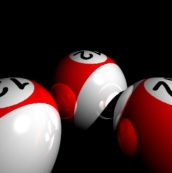
Final Project: Your Own Graphics Project
Project Description
For the final project, you get to pick a project that appeals to you. You also may work in teams of up to 2 people. It will be up to you to form teams and to choose a project. The first deliverable is your project proposal, which I will provide feedback on (i.e. it is either too simple or too ambitious and perhaps suggest alternatives in these cases). These suggestions should be implemented for the final project to receive full credit. You should tell us what you want to do, what your strategy is for accomplishing it, what your strategy is to make sure you have something to turn in even if you don't get everything working, and who will be doing which parts if you are in a team.
The project you choose should be ambitious enough to demonstrate a significant result, but not so hard that you aren't confident about shipping a reasonably complete product. Several project ideas are given below, you can choose one of these or feel free to come up with your own idea. Note that some of these projects are quite challenging, especially for one person, and others are not. If you are not sure how you would approch implmenting the project, it is probably best to choose something else. You can leaf through recent SIGGRAPH proceedings on ACM for additional inspiration.
Please note that we expect a more ambitious project from a team than we do if you're working alone.
Some Project Ideas
Note that some of the pictures below don't correspond to the algorithm suggested, though they all depict the idea described.
Artificial Intelligence
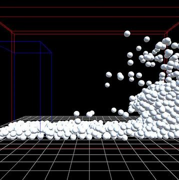 Position-based Dynamics. Extend the position-based dynamics framework with new constraint(s) The new constraints can simulate anything - cloth, crowds, and other physics or AI effects. Demonstrate the new constraint with at least 4 simulations that shows that it works in different cases. Note that the constraint should not be something we already saw in class. See this PBD survey paper for ideas. 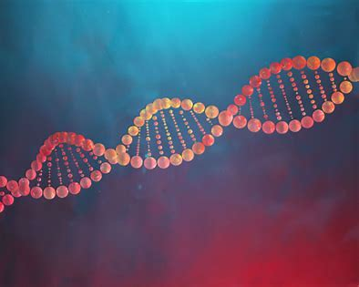 Genetic Algorithms. In the class we saw several use cases for GA, ranging from flight simulators to solving core CS problems. Use GA to solve an interesting animation or simulation problem. This could be build on any topic that we saw in class. 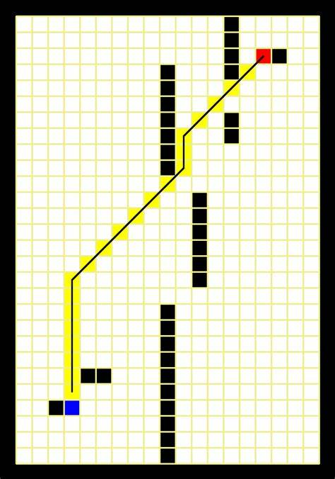 Path Planning. Implement a path planner for ThreeJS. The path planner should be interactive, running interacively for crowds of 100+ agents. It should support walls, columns and other non-standard shaped obstacles. In addition, it should support interactive placement of obstacles, and or openings, such as user opening a door in a room. 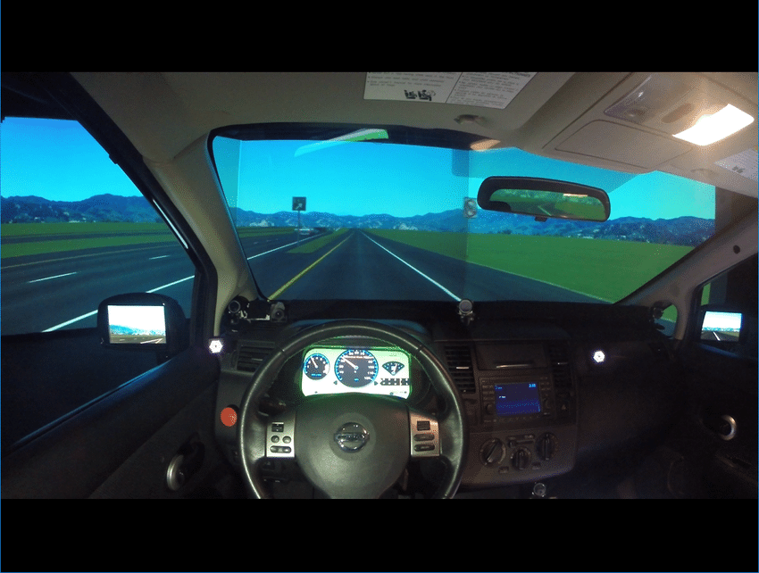 First-Person View Simulator. Create a simulator for an first person experience, such as driving a car or walking in a building. The simulation would be interactivly generated, where the user or an AI controls the FPS-like view. Think of this as a platform for training autonomous systems to drive or locomote in a building. The more realistic the enviroment, the better. This idea is decribed in more detail in this video. Geometric modeling
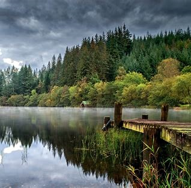 Infinite Procedural Landscapes. Noise is important in virtual worlds for multiple modeling purposes. As a final project, implement a tool to create landscapes: valleys, hills, mountains. Your implementation should be using noise to generate suh landscapes. Consider also to add trees, lakes, roads, and overlay different textures and colors to visualize the different parts. You can start from this video series. See existing github repo, and others available by this author. 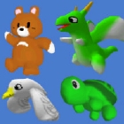 Sketch interface for modeling. Teddy is a sensational system introduced in SIGGRAPH''99 and presents a new paradigm for modeling. In Teddy, users sketch in a drawing window and the system automatically infers the underlying 3D model reasonably. As a final project, you can design your own interface for modeling or follow Teddy's design (you are not required to implement all operations introduced in the paper). You may also want to take a look at SmoothTeddy, the follow-up to Teddy. A good starting point is this ThreeJs repo. 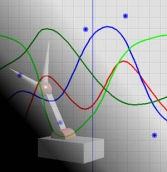 Multi-resolution curves. Create a system which can edit curves at different levels of detal. The curves should be generated by a mathematical function(s), similar to this website. Devise a scheme which can interpolate at non-integer levels of detail. There is a paper by Finkelstein and Salesin on multiresolution curves. Here is a guide on setting up ThreeJS for 2D. 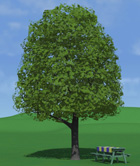 Shape Generation. Use L-Systems or similar algorithms to create dynamics shapes. One example could be a tree built using L-system rules (video). Another example could be a starship, skyscrapper, or other 2D/3D shape. 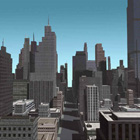 Procedural architecture and cities. Design a general L-system for modeling buildings (simple structure and image-based facades) and cityscapes. Explore ways of parameterizing the buildings by attributes such as age, style, and location. This SIGGRAPH '01 paper by Parish and Muller can be used as a guide. Open-source repos may help.Animation
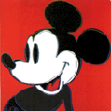 Cartoon physics simulation. Design a simulation environment that would model various aspects of cartoon physics. Augment the traditional simulation of Newtonian physics with additional constraints, damping parameters and other modifications which would produce an exaggerated cartoon-like behavior. 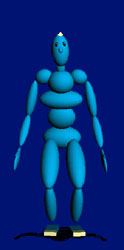 Inverse kinematics. Implement inverse kinematics for character modeling and animation. Given a sequence of trajectories for a few end-effectors on the character's body construct the character's joint angle which would interpolate the end-effector trajectories while ensuring that the character moves "naturally". See lecture on inverse kinematics for details. There is a section on IK in the CSE558 course notes from the University of Washington. 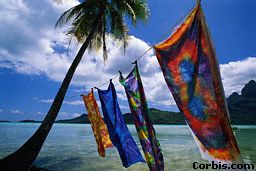 Cloth Simulator. Design a realistic cloth simulation system. Your work can focus on stable and accurate cloth simulation, handling of collisions in a reliable manner, and/or modeling of various kinds of cloth such as wool, cotton, or silk. 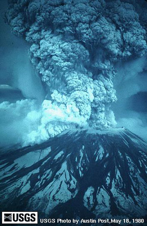 Fracture, Explosion simulation. Develop an system approach to modeling and rendering realistic explosions (fire, dust plums, etc.) and/or fractures. Simulate fractures happening upon a user interaction (mouse click). See this to get you started. 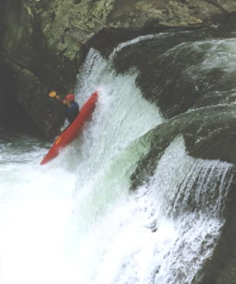 Fluid Simulation. Simulate smoke or fluids with PBD (or other techniques). Whitewater rapids like in the image is the default option, but you don't have to simulate water -- it can be anything fluid or smoke like, e.g. honey, oil. Note that there are many demos and resources online on how to do this with Javascript, for example this or this or this . 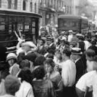 Crowds and cars. Design a model of pedestrian crowds and/or vehicular rush-hour traffic. The crowd model should be parameterized by the number of people, demographics (age, size, etc), and general direction. The pedestrians should exhibit some variations in behavior as well (speed, interacting with others, etc.). Vehicular traffic can be parameterized by time of day, volume, source and destination. In either case, intersections between people and/or crowds must be avoided. Consider adding a GUI for controlling the simulation interactively. Project Proposal
Submit a short project proposal explaining what you are planning to do, what you hope to learn from your project, and describe the results or artifact you intend to produce. The proposal does not need to be long, it should be 1--4 paragraphs max. Link to the proposal will be provided.
If you are working in a team, list the team members and what each person is going to work on (each team member should be responsible for part of the project). It is expected that a team will pursue a more ambitious project than a single person. Each team only needs to submit 1 report.
Submission Instructions
Implement your project proposal with ThreeJS. Submit your results as a blog post(s) and provide a link to it via Canvas. The blog will contain a GitHub/GitLab repo link -- make sure to keep your repository private and give access to the instructor (GitHub/GitLab usernames will be posted to Announcements on Canvas).In addition to your complete source code, the project should include:
Building on existing open source Javascript and ThreeJS repos is allowed, BUT if you copy a repsoitory as-is and claim it to be your implementation, you will get non-passing grade.
- A blog post(s) post summarizing your ThreeJS project, with images.
- A README file including your name (and your partner's name), and instructions as to how to run your code.
- A link to your presentation slides providing:
- the necessary background to understand your project
- a description of what you accomplished
- the artifact(s) you produced
- a list of references (does not need to be MLA but make sure the all necessary information to find the reference is there)
- enumerated list of any libraries or packages you used.
The technical slides does not need to be conference caliber, but they should be neat, with many images, videos, and technically competent, easy to read.
No late submissions allowed, in class presentations are mandatory.
Last modified: 03/28/23 by Tomer Weiss first.last@njit.edu